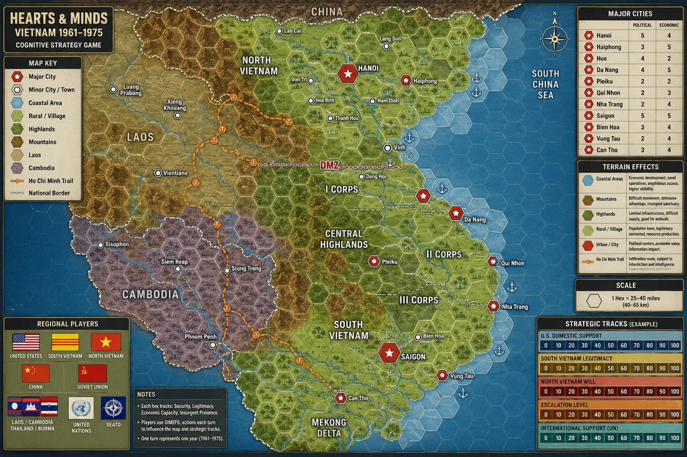

Hearts_and_Minds_Map.png alongside this file.
This simulation is built around a single argument from the design conversations: if the Free World side does not have the trajectory moving in the right direction by 1965, the war cannot be won by escalation afterward. The headline metric is the Rural Governance Index (RGI) — a proxy for the designer's plain-language test: do rural villages have effective governance at night? Body count is deliberately not the scoreboard.
South Vietnamese rural villages become resilient to insurgency; the Viet Minh / Viet Cong find less value in the hard labor of insurgency, forcing the North to seek other means.
Develop respected, democratically legitimate leadership in South Vietnam at every level — not a coerced regime competing for hearts and minds by force.
Party development, popular-issue gathering, and legitimate financial and civic support to local officials who actually win elections.
RGI = 0.50 × South Vietnam Legitimacy + 0.25 × U.S. Domestic Support + 0.15 × (100 − Escalation) + 0.10 × (100 − North Vietnam Will). Legitimacy is the center of gravity; escalation and enemy will erode governance even when "winning" militarily. The Ho Chi Minh Trail choice from Wayne's note — interdict it by force (Highway 9 / Khe Sanh, heavy casualties, angers China) or erode the will to carry it — is modeled by the tension between military trail-bombing cards (escalation, lost international support) and information/economic cards that drain North Vietnamese will.
index.html with the chat transcripts that explain the cognitive reasoning behind each design decision. Look for the comment marker <!-- CONVERSATIONS --> just below this paragraph in the source.